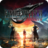
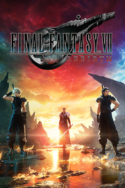

 Final Fantasy VII Rebirth
Detalles
|  | |
| Tiempo de juego | No Jugado |
| Última actividad | Nunca |
| Añadido | 1/27/2025 15:20:19 |
| Modificado | 1/29/2025 14:26:53 |
| Estado de finalización | Not Played |
| Librería | Playnite |
| Fuente | 6TB STORE |
| Plataforma | PC (Windows) |
| Fecha de lanzamiento | |
| Puntuación de la Comunidad | 75 |
| Puntuación de la Crítica | |
| Puntuación de usuario | |
| Género | Acción Aventura Rol |
| Desarrollador | Square Enix |
| Editor | Square Enix |
| Característica | Cloud Saves Compat. Total Con Mando Cromos De HDR Disponible Logros De Préstamo Familiar Un Jugador |
| Enlaces | Punto de encuentro Discusiones Guías Noticias Página de la tienda PCGamingWiki Logros |
| Tag | Acción Acción y aventura Ambientales Anime Aventura Buena trama Cinematográficos Drama Emocionales Fantasía Luchador espectacular Magia Mundo abierto Realistas Rol Rol de acción Rol en grupo Rol japonés Tercera persona Un jugador |
Descripción
El segundo juego de la trilogía remake de FINAL FANTASY VII
Tras escapar de Midgar, la ciudad del mako, Cloud y compañía superan los límites del destino y se aventuran a un páramo desconocido.
Te aguarda un vasto mundo con multitud de características, además de una historia nueva en la que cabalgarás a lomos de chocobos para explorar a tu antojo los distintos puntos de interés del mapa.
Tras un enfrentamiento brutal, el ex-Soldado Cloud Strife y sus compañeros Tifa, Aeris, Barret y Red XIII huyen de Midgar y se abren paso por el ancho mundo. Así comienza un recorrido por todo el planeta, atravesando enormes llanuras a lomos de chocobos y visitando lugares conocidos tras la pista a Sefirot, el héroe envilecido. Esta persecución culmina con un viaje a la capital olvidada del FINAL FANTASY VII original.
Al mismo tiempo, el Soldado de 1.ª clase Zack Fair se arrastra malherido por el desierto rumbo a Midgar, prestando ayuda a su buen amigo, que delira a causa de un grave envenenamiento por mako. En los límites entre la vida y la muerte, este ve una fatídica fisura que atraviesa los cielos.
El comité anti-Shinra, una fuerza en alza liderada por el gobierno en funciones de Wutai, declara la guerra.
Un grupo de misteriosas figuras con túnicas negras portan los restos de Jénova, la calamidad que procede de los cielos, con fines desconocidos.
Al percibir que el planeta está entrando en crisis, unos antiguos guardianes conocidos como el Arma empiezan a despertar dentro de la propia corriente vital.
Mientras tanto, las maquinaciones de Sefirot, el archienemigo de Cloud, enfrentan y entrecruzan los destinos de infinidad de personas, y esto provocará que la historia se rescriba.

El primer juego de la trilogía, FINAL FANTASY VII REMAKE, se publicó en 2020, obtuvo una excelente acogida a nivel global y ha vendido más de siete millones de unidades en todo el mundo. Ahora el segundo título, FINAL FANTASY VII REBIRTH, narra la historia central de la trilogía, que ya se ha ganado el favor de la crítica.

Tras escapar de Midgar, la ciudad del mako, Cloud y compañía superan los límites del destino y se aventuran a un páramo desconocido.
Te aguarda un vasto mundo con multitud de características, además de una historia nueva en la que cabalgarás a lomos de chocobos para explorar a tu antojo los distintos puntos de interés del mapa.
■Historia
La corriente vital constituye el ciclo de la existencia, pues toda vida nacida en el planeta regresa a ella. Sin embargo, la siniestra Compañía de Electricidad y Energía Shinra extrae esta energía vital en forma de mako y la utiliza sin miramientos como combustible.Tras un enfrentamiento brutal, el ex-Soldado Cloud Strife y sus compañeros Tifa, Aeris, Barret y Red XIII huyen de Midgar y se abren paso por el ancho mundo. Así comienza un recorrido por todo el planeta, atravesando enormes llanuras a lomos de chocobos y visitando lugares conocidos tras la pista a Sefirot, el héroe envilecido. Esta persecución culmina con un viaje a la capital olvidada del FINAL FANTASY VII original.
Al mismo tiempo, el Soldado de 1.ª clase Zack Fair se arrastra malherido por el desierto rumbo a Midgar, prestando ayuda a su buen amigo, que delira a causa de un grave envenenamiento por mako. En los límites entre la vida y la muerte, este ve una fatídica fisura que atraviesa los cielos.
El comité anti-Shinra, una fuerza en alza liderada por el gobierno en funciones de Wutai, declara la guerra.
Un grupo de misteriosas figuras con túnicas negras portan los restos de Jénova, la calamidad que procede de los cielos, con fines desconocidos.
Al percibir que el planeta está entrando en crisis, unos antiguos guardianes conocidos como el Arma empiezan a despertar dentro de la propia corriente vital.
Mientras tanto, las maquinaciones de Sefirot, el archienemigo de Cloud, enfrentan y entrecruzan los destinos de infinidad de personas, y esto provocará que la historia se rescriba.
La trilogía remake de FINAL FANTASY VII
El proyecto remake de FINAL FANTASY VII aprovecha la tecnología más puntera para hacer llegar FINAL FANTASY VII, el legendario juego de rol que cautivó al mundo entero, a una nueva generación, a la vez que ofrece a los fans una reinterpretación de la célebre historia.El primer juego de la trilogía, FINAL FANTASY VII REMAKE, se publicó en 2020, obtuvo una excelente acogida a nivel global y ha vendido más de siete millones de unidades en todo el mundo. Ahora el segundo título, FINAL FANTASY VII REBIRTH, narra la historia central de la trilogía, que ya se ha ganado el favor de la crítica.